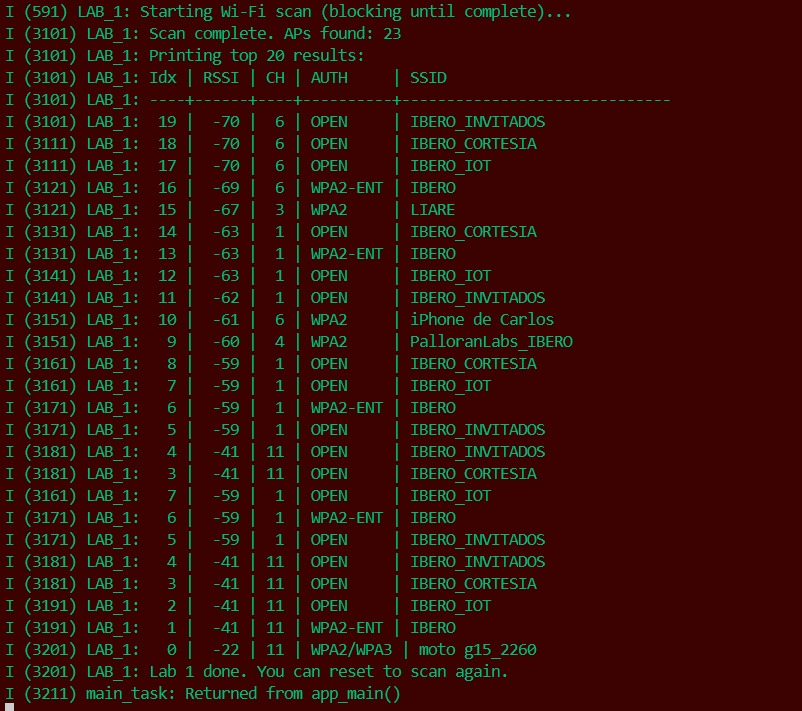
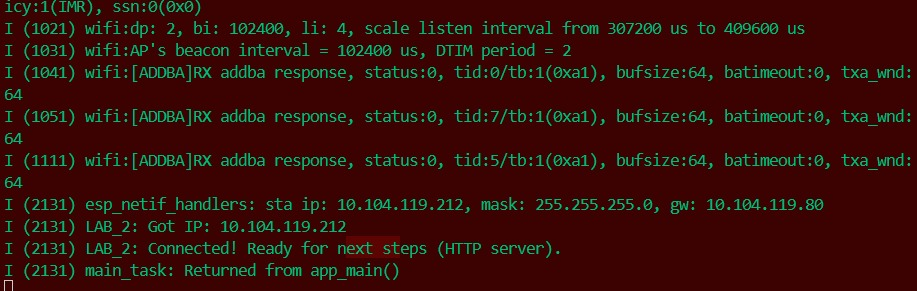
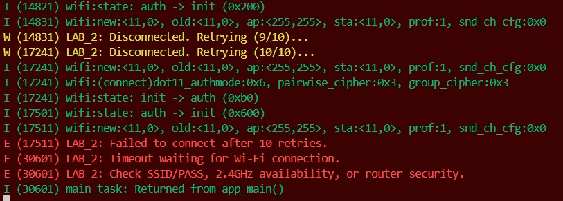
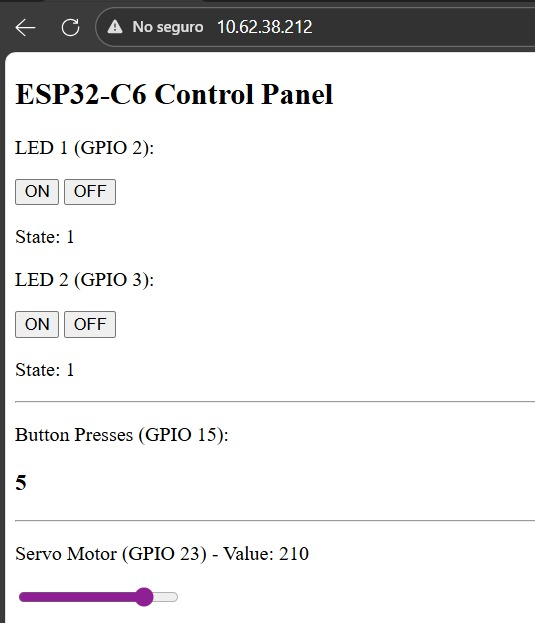
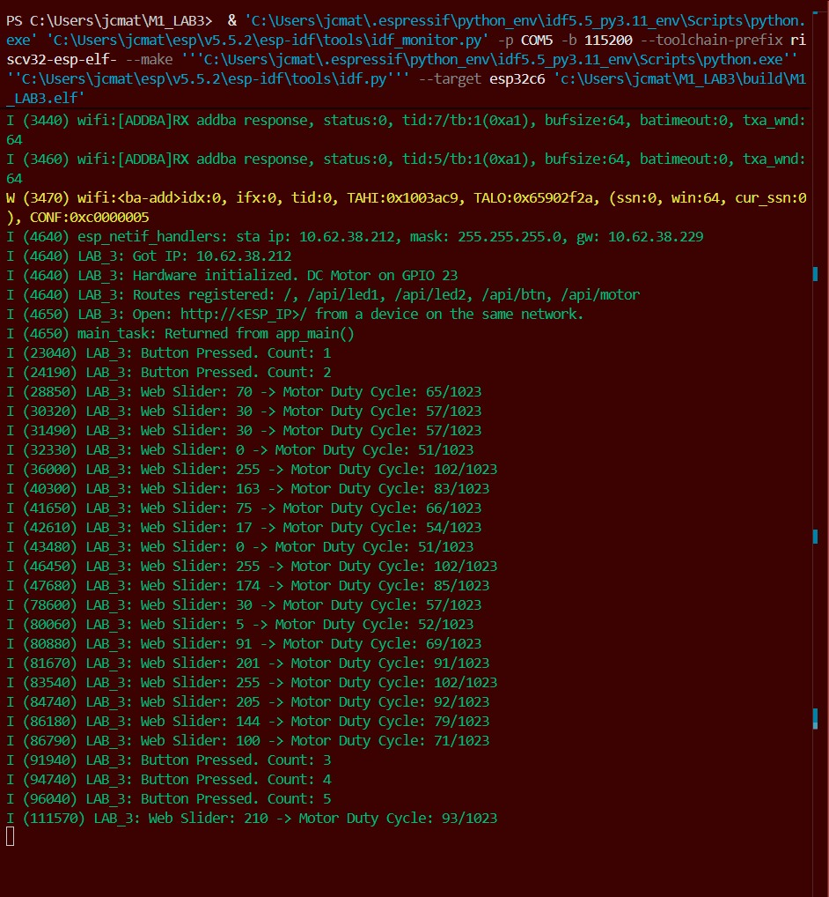

Assignment 3, Wi-Fi Programming Lab: HTTP Server
This assignment focuses on programming Wi-Fi capabilities using ESP-IDF and implementing an HTTP server on a local network.
1. Activity goals
The main goals of this activity are:
- Learn how to program Wi-Fi capabilities using ESP-IDF.
- Implement an HTTP server on a local network.
- Use Wi-Fi APIs to connect to a network and control hardware elements.
2. Materials and Setup
BOM
| # | Item | Qty | Link/Source | Cost | Notes |
|---|---|---|---|---|---|
| 1 | Espressif ESP32-C6-DevKitC-1 | 1 | ______ | ______ | ______ |
| 2 | L298N DC Motor Driver | 1 | ______ | ______ | 12V motor input, 5V logic input |
| 3 | DC Motor | 1 | ______ | ______ | 12V DC motor |
| 4 | Breadboard | 1 | ______ | ______ | ______ |
| 5 | LED | 2 | ______ | ______ | ______ |
| 6 | Button | 2 | ______ | ______ | ______ |
| 7 | Resistors | 3 | ______ | ______ | 220 Ω |
Tools / Software - Visual Studio Code, ESP-IDF extension.
Wiring / Safety - Motor driver current limit: 4A. A DC power supply was used at an output of 12V and 0.5 A.
3. Data, Tests & Evidence
M1 LAB1
Code:
/*
* LAB 1 — Wi-Fi Scan
*
* Learning Goals:
* - The minimum initialization pipeline required for Wi-Fi in ESP-IDF
* - How to scan for Access Points (APs)
* - How to interpret RSSI, channel, and auth mode
*/
//Libraries for standard C functions
#include <string.h>
#include <stdio.h>
//Libraries for FreeRTOS (task management)
#include "freertos/FreeRTOS.h"
#include "freertos/task.h"
//Libraries for ESP-IDF logging and error handling
#include "esp_log.h"
#include "esp_err.h"
//Libraries for Wi-Fi and related components
#include "nvs_flash.h" // nvs_flash_init() lives here
#include "esp_netif.h" // esp_netif_init(), esp_netif_create_default_wifi_sta() lives here
#include "esp_event.h" // esp_event_loop_create_default() lives here
#include "esp_wifi.h" // Wi-Fi driver + scan APIs live here
static const char *TAG = "LAB_1";//Tag for logging
/*
* Function Use:
* Convert auth mode enum to a readable string. Enum is a special type of data to define a series of named integer
* constants. This is useful for printing human-friendly output instead of numeric codes.
*/
static const char *authmode_to_str(wifi_auth_mode_t a)
{
/*Let's remember authentication is the security process of verifying the identity of a device (phone, laptop) attempting to connect to a wireless network before granting it access. */
switch (a) {
case WIFI_AUTH_OPEN: return "OPEN";
case WIFI_AUTH_WEP: return "WEP";
case WIFI_AUTH_WPA_PSK: return "WPA";
case WIFI_AUTH_WPA2_PSK: return "WPA2";
case WIFI_AUTH_WPA_WPA2_PSK: return "WPA/WPA2";
case WIFI_AUTH_WPA2_ENTERPRISE: return "WPA2-ENT";
case WIFI_AUTH_WPA3_PSK: return "WPA3";
case WIFI_AUTH_WPA2_WPA3_PSK: return "WPA2/WPA3";
default: return "UNKNOWN";
}
}
/*
* Function Use:
* Perform a Wi-Fi scan and print top N results.
* Note: This Lab does not connect to any network yet.
*/
static void wifi_scan_and_print(void)
{
// Scan configuration:
// - channel=0 means "scan all channels"
// - ssid/bssid NULL means "no filter, include all"
// - show_hidden=true includes SSIDs that do not broadcast (rare, but useful)
wifi_scan_config_t scan_cfg = {
.ssid = NULL,
.bssid = NULL,
.channel = 0,
.show_hidden = true,
// You can later introduce active/passive scan options if desired:
// .scan_type = WIFI_SCAN_TYPE_ACTIVE,
// .scan_time.active.min = 100,
// .scan_time.active.max = 300
};
ESP_LOGI(TAG, "Starting Wi-Fi scan (blocking until complete)...");
ESP_ERROR_CHECK(esp_wifi_scan_start(&scan_cfg, true)); // true = block until done
// Get how many APs were found
uint16_t ap_count = 0;
ESP_ERROR_CHECK(esp_wifi_scan_get_ap_num(&ap_count));
ESP_LOGI(TAG, "Scan complete. APs found: %u", ap_count);
// Limit how many records we read to avoid huge stack usage
const uint16_t MAX_AP_PRINT = 20;
wifi_ap_record_t ap_records[MAX_AP_PRINT];
uint16_t number = (ap_count < MAX_AP_PRINT) ? ap_count : MAX_AP_PRINT;
// Read up to 'number' records into ap_records[]
ESP_ERROR_CHECK(esp_wifi_scan_get_ap_records(&number, ap_records));
ESP_LOGI(TAG, "Printing top %u results:", number);
ESP_LOGI(TAG, "Idx | RSSI | CH | AUTH | SSID");
ESP_LOGI(TAG, "----+------+----+----------+------------------------------");
for (int i = 0; i < number; i++) {
// RSSI: closer to 0 is stronger (e.g., -35 is strong, -85 is weak)
// primary: channel number
// ssid: AP name (null-terminated string)
ESP_LOGI(TAG, "%3d | %4d | %2d | %-8s | %s",
i,
ap_records[i].rssi,
ap_records[i].primary,
authmode_to_str(ap_records[i].authmode),
(char *)ap_records[i].ssid);
}
}
/*
* Minimal Wi-Fi initialization required before scanning.
* Order matters:
* 1) NVS
* 2) netif
* 3) event loop
* 4) create default STA interface
* 5) Wi-Fi init + set mode + start
*/
static void wifi_init_for_scan(void)
{
// 1) NVS initialization (required by Wi-Fi)
esp_err_t ret = nvs_flash_init();
if (ret == ESP_ERR_NVS_NO_FREE_PAGES || ret == ESP_ERR_NVS_NEW_VERSION_FOUND) {
// This can happen if flash partition was changed or NVS is corrupted.
// Erase and re-init is a common recovery in labs.
ESP_ERROR_CHECK(nvs_flash_erase());
ESP_ERROR_CHECK(nvs_flash_init());
} else {
ESP_ERROR_CHECK(ret);
}
// 2) Initialize network interface layer
ESP_ERROR_CHECK(esp_netif_init());
// 3) Create the default event loop
ESP_ERROR_CHECK(esp_event_loop_create_default());
// 4) Create default Wi-Fi STA interface
esp_netif_create_default_wifi_sta();
// 5) Initialize Wi-Fi driver
wifi_init_config_t cfg = WIFI_INIT_CONFIG_DEFAULT();
ESP_ERROR_CHECK(esp_wifi_init(&cfg));
// Set station mode (we are a client, not an AP)
ESP_ERROR_CHECK(esp_wifi_set_mode(WIFI_MODE_STA));
// Start Wi-Fi driver (turns radio on and enables operations like scan)
ESP_ERROR_CHECK(esp_wifi_start());
ESP_LOGI(TAG, "Wi-Fi initialized and started in STA mode.");
}
void app_main(void)
{
ESP_LOGI(TAG, "Lab 1 start: Wi-Fi scan demo.");
wifi_init_for_scan();
wifi_scan_and_print();
ESP_LOGI(TAG, "Lab 1 done. You can reset to scan again.");
}
Results:
1) Printed AP list sorted by weakest to strongest RSSI:
- The SSID of the strongest detected AP was moto_g15_2260.
- It's RSSI value was -22 dBm.
- It's authentication mode is WPA2/WPA3.
- It's channel number was 11.
- The channel with the most APs detected was channel 1.
To change the sorting order, modify the for loop located in line 91, inside the wifi_scan_and_print() function:
Change for (int i = 0; i < number; i++) to for (int i = number - 1; i >= 0; i--)
2) Printed AP list sorted by strongest to weakest RSSI:
M1 LAB2
Code:
/*
* Lab 2 — Wi-Fi Station Connect (STA) + Reconnect
*
* Learning Goals:
* - How to connect to Wi-Fi as a station (client)
* - How to react to connection events using the event loop
* - How to implement a basic reconnect strategy
* - How to wait until "got IP" before continuing
*/
// Standard C library for string functions
#include <string.h>
#include <stdio.h>
// RTOS libraries for event groups and tasks
#include "freertos/FreeRTOS.h"
#include "freertos/event_groups.h" //Esp_event_group_create(), xEventGroupWaitBits() live here
// Libraries for ESP-IDF logging and error handling
#include "esp_log.h"
#include "esp_err.h"
// Libraries for NVS, network interfaces, event loop, and Wi-Fi
#include "nvs_flash.h"
#include "esp_netif.h"
#include "esp_event.h"
#include "esp_wifi.h" // Wi-Fi driver and event APIs live here
// Logging tag for this lab
static const char *TAG = "LAB_2";
/*
* Event Group used to signal connection status to the main flow.
* We will set WIFI_CONNECTED_BIT when we obtain an IP address.
*/
static EventGroupHandle_t s_wifi_event_group;
#define WIFI_CONNECTED_BIT BIT0
/*
* IMPORTANT:
* For the lab, prefer putting SSID/PASS in menuconfig.
* If you haven't created menuconfig entries yet, you can temporarily
* hardcode them here (NOT recommended long-term).
*/
#ifndef WIFI_SSID
#define WIFI_SSID "YOUR_SSID"
#endif
#ifndef WIFI_PASS
#define WIFI_PASS "YOUR_PASS"
#endif
// Reconnect logic
static int s_retry = 0; // Counts how many times we've retried connection
#define MAX_RETRY 10
/*
* wifi_event_handler()
* -------------------
* This single callback handles both WIFI_EVENT and IP_EVENT.
*
* Key mapping:
* - WIFI_EVENT_STA_START -> call esp_wifi_connect()
* - WIFI_EVENT_STA_DISCONNECTED -> retry connection
* - IP_EVENT_STA_GOT_IP -> "online", set event group bit
*/
static void wifi_event_handler(void *arg,
esp_event_base_t event_base,
int32_t event_id,
void *event_data)
{
// 1) Wi-Fi driver says STA started -> attempt connect
if (event_base == WIFI_EVENT && event_id == WIFI_EVENT_STA_START) {
ESP_LOGI(TAG, "WIFI_EVENT_STA_START -> esp_wifi_connect()");
ESP_ERROR_CHECK(esp_wifi_connect());
return;
}
// 2) Disconnected -> retry (up to MAX_RETRY)
if (event_base == WIFI_EVENT && event_id == WIFI_EVENT_STA_DISCONNECTED) {
// Optional: you can inspect reason codes here later
// wifi_event_sta_disconnected_t *disc = (wifi_event_sta_disconnected_t*)event_data;
if (s_retry < MAX_RETRY) {
s_retry++;
ESP_LOGW(TAG, "Disconnected. Retrying (%d/%d)...", s_retry, MAX_RETRY);
// Re-attempt association
ESP_ERROR_CHECK(esp_wifi_connect());
} else {
ESP_LOGE(TAG, "Failed to connect after %d retries.", MAX_RETRY);
// NOTE: we do not set WIFI_CONNECTED_BIT
}
return;
}
// 3) IP acquired (DHCP success) -> signal to main flow
if (event_base == IP_EVENT && event_id == IP_EVENT_STA_GOT_IP) {
ip_event_got_ip_t *event = (ip_event_got_ip_t *)event_data;
ESP_LOGI(TAG, "Got IP: " IPSTR, IP2STR(&event->ip_info.ip));
// Reset retry counter after a successful connection
s_retry = 0;
// Signal "connected" to whoever is waiting
xEventGroupSetBits(s_wifi_event_group, WIFI_CONNECTED_BIT);
return;
}
}
/*
* wifi_init_sta()
* --------------
* Sets up the full stack needed for STA connect:
* - netif + default event loop
* - default Wi-Fi STA interface
* - Wi-Fi driver init
* - event handler registration
* - apply SSID/PASS
* - start Wi-Fi (which triggers WIFI_EVENT_STA_START)
*/
static void wifi_init_sta(void)
{
// Create the event group that we will use to signal connection
s_wifi_event_group = xEventGroupCreate();
// Initialize networking foundations (same as Lab 1)
ESP_ERROR_CHECK(esp_netif_init());
ESP_ERROR_CHECK(esp_event_loop_create_default());
// Create a default STA network interface object
esp_netif_create_default_wifi_sta();
// Initialize Wi-Fi driver
wifi_init_config_t cfg = WIFI_INIT_CONFIG_DEFAULT();
ESP_ERROR_CHECK(esp_wifi_init(&cfg));
// Register event handlers
ESP_ERROR_CHECK(esp_event_handler_register(
WIFI_EVENT, ESP_EVENT_ANY_ID, &wifi_event_handler, NULL));
ESP_ERROR_CHECK(esp_event_handler_register(
IP_EVENT, IP_EVENT_STA_GOT_IP, &wifi_event_handler, NULL));
// Fill Wi-Fi configuration struct (STA credentials)
wifi_config_t wifi_config = {0};
// Copy SSID/PASS safely into fixed-size arrays
strncpy((char *)wifi_config.sta.ssid, WIFI_SSID, sizeof(wifi_config.sta.ssid));
strncpy((char *)wifi_config.sta.password, WIFI_PASS, sizeof(wifi_config.sta.password));
// Optional: recommended defaults for many labs
// wifi_config.sta.threshold.authmode = WIFI_AUTH_WPA2_PSK;
ESP_LOGI(TAG, "Configuring Wi-Fi STA: SSID='%s'", WIFI_SSID);
// Set mode + apply config + start
ESP_ERROR_CHECK(esp_wifi_set_mode(WIFI_MODE_STA));
ESP_ERROR_CHECK(esp_wifi_set_config(WIFI_IF_STA, &wifi_config));
ESP_ERROR_CHECK(esp_wifi_start());
// After esp_wifi_start(), the driver will emit WIFI_EVENT_STA_START,
// which triggers esp_wifi_connect() inside our handler.
}
/*
* app_main()
* ----------
* Initializes NVS and starts STA connect.
* Then waits (up to 30s) until WIFI_CONNECTED_BIT is set by GOT_IP.
*/
void app_main(void)
{
ESP_LOGI(TAG, "Lab 2 start: Wi-Fi STA connect + reconnect.");
// NVS is required by Wi-Fi (same recovery pattern as Lab 1)
esp_err_t ret = nvs_flash_init();
if (ret == ESP_ERR_NVS_NO_FREE_PAGES || ret == ESP_ERR_NVS_NEW_VERSION_FOUND) {
ESP_ERROR_CHECK(nvs_flash_erase());
ESP_ERROR_CHECK(nvs_flash_init());
} else {
ESP_ERROR_CHECK(ret);
}
wifi_init_sta();
// Wait until connected (GOT_IP) or timeout
EventBits_t bits = xEventGroupWaitBits(
s_wifi_event_group,
WIFI_CONNECTED_BIT,
pdFALSE,
pdTRUE,
pdMS_TO_TICKS(30000)
);
if (bits & WIFI_CONNECTED_BIT) {
ESP_LOGI(TAG, "Connected! Ready for next steps (HTTP server).");
} else {
ESP_LOGE(TAG, "Timeout waiting for Wi-Fi connection.");
ESP_LOGE(TAG, "Check SSID/PASS, 2.4GHz availability, or router security.");
}
}
Results:
1) Serial terminal showing a successful connection:
2) Serial terminal showing an intentional failed connection attempt:
- The
WIFI_EVENT_STA_STARTevent indicates “Wi-Fi driver started and is ready to connect” - The
IP_EVENT_STA_GOT_IPevent indicates “network stack has an IP and the device is online” - The assigned IP address was 10.104.119.212
- We got a successful connection and IP assignment on the first attempt.
- In our logs,
WIFI_EVENT_STA_STARThappened beforeIP_EVENT_STA_GOT_IP, this is because the Wi-Fi driver must be initialized and ready to connect before an IP address can be assigned.
M1 LAB3
Code:
/*
* LAB 3 — ESP32-C6 Wi-Fi + HTTP Dual LED + Button + DC Motor
*
* Features:
* - Wi-Fi STA connect + reconnect using events
* - Wait for IP (WIFI_CONNECTED_BIT)
* - Simple GPIO LED control & Physical Button Input
* - Hardware PWM (LEDC) for DC Motor Control (1000Hz, 8-bit)
* - HTTP server:
* GET / -> HTML UI
* GET /api/led1 -> JSON {"state":0|1}
* POST /api/led1 -> JSON {"state":0|1}
* GET /api/led2 -> JSON {"state":0|1}
* POST /api/led2 -> JSON {"state":0|1}
* GET /api/btn -> JSON {"count": N}
* GET /api/motor -> JSON {"speed": 0-255}
* POST /api/motor -> JSON {"speed": 0-255}
*
*/
#include <string.h>
#include <stdio.h>
#include <stdlib.h>
#include "freertos/FreeRTOS.h"
#include "freertos/event_groups.h"
#include "freertos/task.h"
#include "esp_log.h"
#include "esp_err.h"
#include "nvs_flash.h"
#include "esp_netif.h"
#include "esp_event.h"
#include "esp_wifi.h"
#include "driver/gpio.h"
#include "driver/ledc.h"
#include "esp_http_server.h"
/* ===================== User config ===================== */
#define WIFI_SSID "JCMP01"
#define WIFI_PASS "wgvo2919"
/* Pins */
#define LED1_GPIO 2
#define LED2_GPIO 3
#define BUTTON_GPIO 15
#define MOTOR_GPIO 23
/* Reconnect policy */
#define MAX_RETRY 10
/* ===================== Globals ===================== */
static const char *TAG = "LAB_3";
static EventGroupHandle_t s_wifi_event_group;
#define WIFI_CONNECTED_BIT BIT0
static int s_retry = 0;
static int s_led1_state = 0;
static int s_led2_state = 0;
static int s_btn_count = 0;
static int s_motor_speed = 0;
static httpd_handle_t s_server = NULL;
/* ===================== Hardware Helpers ===================== */
static void gpio_init_custom(void)
{
// Configure LEDs
gpio_reset_pin(LED1_GPIO);
gpio_set_direction(LED1_GPIO, GPIO_MODE_OUTPUT);
gpio_set_level(LED1_GPIO, s_led1_state);
gpio_reset_pin(LED2_GPIO);
gpio_set_direction(LED2_GPIO, GPIO_MODE_OUTPUT);
gpio_set_level(LED2_GPIO, s_led2_state);
// Configure Button (Internal Pull-up)
gpio_reset_pin(BUTTON_GPIO);
gpio_set_direction(BUTTON_GPIO, GPIO_MODE_INPUT);
gpio_set_pull_mode(BUTTON_GPIO, GPIO_PULLUP_ONLY);
// Configure PWM for DC Motor
ledc_timer_config_t ledc_timer = {
.speed_mode = LEDC_LOW_SPEED_MODE,
.timer_num = LEDC_TIMER_0,
.duty_resolution = LEDC_TIMER_8_BIT,
.freq_hz = 1000,
.clk_cfg = LEDC_AUTO_CLK
};
ESP_ERROR_CHECK(ledc_timer_config(&ledc_timer));
ledc_channel_config_t ledc_channel = {
.speed_mode = LEDC_LOW_SPEED_MODE,
.channel = LEDC_CHANNEL_0,
.timer_sel = LEDC_TIMER_0,
.intr_type = LEDC_INTR_DISABLE,
.gpio_num = MOTOR_GPIO,
.duty = 0,
.hpoint = 0
};
ESP_ERROR_CHECK(ledc_channel_config(&ledc_channel));
ESP_LOGI(TAG, "Hardware initialized. DC Motor on GPIO %d", MOTOR_GPIO);
}
static void led1_set(int on)
{
s_led1_state = (on != 0);
gpio_set_level(LED1_GPIO, s_led1_state);
}
static void led2_set(int on)
{
s_led2_state = (on != 0);
gpio_set_level(LED2_GPIO, s_led2_state);
}
static void motor_set(int speed)
{
if (speed < 0) speed = 0;
if (speed > 255) speed = 255;
s_motor_speed = speed;
int duty = 51 + (speed * 51 / 255);
ledc_set_duty(LEDC_LOW_SPEED_MODE, LEDC_CHANNEL_0, duty);
ledc_update_duty(LEDC_LOW_SPEED_MODE, LEDC_CHANNEL_0);
ESP_LOGI(TAG, "Web Slider: %d -> Motor Duty Cycle: %d/1023", s_motor_speed, duty);
}
static void button_task(void *pvParameters)
{
int last_state = 1;
while (1) {
int current_state = gpio_get_level(BUTTON_GPIO);
if (last_state == 1 && current_state == 0) {
s_btn_count++;
ESP_LOGI(TAG, "Button Pressed. Count: %d", s_btn_count);
}
last_state = current_state;
vTaskDelay(pdMS_TO_TICKS(50));
}
}
/* ===================== HTTP handlers ===================== */
static esp_err_t api_led1_get(httpd_req_t *req) {
char resp[32]; snprintf(resp, sizeof(resp), "{\"state\":%d}", s_led1_state);
httpd_resp_set_type(req, "application/json"); httpd_resp_send(req, resp, HTTPD_RESP_USE_STRLEN); return ESP_OK;
}
static esp_err_t api_led1_post(httpd_req_t *req) {
char buf[257] = {0}; int received = httpd_req_recv(req, buf, 256); buf[received] = '\0';
int state = -1; char *p = strstr(buf, "\"state\""); if (p) { p = strchr(p, ':'); if (p) state = atoi(p + 1); }
if (state == 0 || state == 1) led1_set(state);
httpd_resp_set_type(req, "application/json"); httpd_resp_sendstr(req, "{\"ok\":true}"); return ESP_OK;
}
static esp_err_t api_led2_get(httpd_req_t *req) {
char resp[32]; snprintf(resp, sizeof(resp), "{\"state\":%d}", s_led2_state);
httpd_resp_set_type(req, "application/json"); httpd_resp_send(req, resp, HTTPD_RESP_USE_STRLEN); return ESP_OK;
}
static esp_err_t api_led2_post(httpd_req_t *req) {
char buf[257] = {0}; int received = httpd_req_recv(req, buf, 256); buf[received] = '\0';
int state = -1; char *p = strstr(buf, "\"state\""); if (p) { p = strchr(p, ':'); if (p) state = atoi(p + 1); }
if (state == 0 || state == 1) led2_set(state);
httpd_resp_set_type(req, "application/json"); httpd_resp_sendstr(req, "{\"ok\":true}"); return ESP_OK;
}
static esp_err_t api_btn_get(httpd_req_t *req)
{
char resp[32];
snprintf(resp, sizeof(resp), "{\"count\":%d}", s_btn_count);
httpd_resp_set_type(req, "application/json");
httpd_resp_send(req, resp, HTTPD_RESP_USE_STRLEN);
return ESP_OK;
}
static esp_err_t api_motor_get(httpd_req_t *req)
{
char resp[32];
snprintf(resp, sizeof(resp), "{\"speed\":%d}", s_motor_speed);
httpd_resp_set_type(req, "application/json");
httpd_resp_send(req, resp, HTTPD_RESP_USE_STRLEN);
return ESP_OK;
}
static esp_err_t api_motor_post(httpd_req_t *req)
{
if (req->content_len <= 0 || req->content_len > 256) return ESP_FAIL;
char buf[257] = {0};
int received = httpd_req_recv(req, buf, req->content_len);
if (received <= 0) return ESP_FAIL;
buf[received] = '\0';
int speed = -1;
char *p = strstr(buf, "\"speed\"");
if (p) {
p = strchr(p, ':');
if (p) speed = atoi(p + 1);
}
if (speed >= 0 && speed <= 255) {
motor_set(speed);
}
httpd_resp_set_type(req, "application/json");
httpd_resp_sendstr(req, "{\"ok\":true}");
return ESP_OK;
}
static esp_err_t root_get_handler(httpd_req_t *req)
{
static const char *INDEX_HTML =
"<!doctype html>\n"
"<html>\n"
"<head>\n"
" <meta charset='utf-8'>\n"
" <meta name='viewport' content='width=device-width, initial-scale=1'>\n"
" <title>ESP32-C6 Control</title>\n"
"</head>\n"
"<body>\n"
" <h2>ESP32-C6 Control Panel</h2>\n"
" <p>LED 1 (GPIO 2):</p>\n"
" <button onclick='setLed1(1)'>ON</button>\n"
" <button onclick='setLed1(0)'>OFF</button>\n"
" <p id='st1'>State: ?</p>\n"
" <p>LED 2 (GPIO 3):</p>\n"
" <button onclick='setLed2(1)'>ON</button>\n"
" <button onclick='setLed2(0)'>OFF</button>\n"
" <p id='st2'>State: ?</p>\n"
" <hr>\n"
" <p>Button Presses (GPIO 15):</p>\n"
" <h3 id='btn_count'>0</h3>\n"
" <hr>\n"
" <p>Servo Motor (GPIO 23) - Value: <span id='m_val'>0</span></p>\n"
" <input type='range' id='m_slider' min='0' max='255' value='0' onchange='setMotor(this.value)'>\n"
"\n"
" <script>\n"
" async function refresh(){\n"
" const r1 = await fetch('/api/led1'); const j1 = await r1.json();\n"
" document.getElementById('st1').innerText = 'State: ' + j1.state;\n"
" const r2 = await fetch('/api/led2'); const j2 = await r2.json();\n"
" document.getElementById('st2').innerText = 'State: ' + j2.state;\n"
" const rb = await fetch('/api/btn'); const jb = await rb.json();\n"
" document.getElementById('btn_count').innerText = jb.count;\n"
" const rm = await fetch('/api/motor'); const jm = await rm.json();\n"
" document.getElementById('m_val').innerText = jm.speed;\n"
" document.getElementById('m_slider').value = jm.speed;\n"
" }\n"
" async function setLed1(v){\n"
" await fetch('/api/led1', { method: 'POST', headers: {'Content-Type':'application/json'}, body: JSON.stringify({state:v}) });\n"
" refresh();\n"
" }\n"
" async function setLed2(v){\n"
" await fetch('/api/led2', { method: 'POST', headers: {'Content-Type':'application/json'}, body: JSON.stringify({state:v}) });\n"
" refresh();\n"
" }\n"
" async function setMotor(v){\n"
" document.getElementById('m_val').innerText = v;\n"
" await fetch('/api/motor', { method: 'POST', headers: {'Content-Type':'application/json'}, body: JSON.stringify({speed: parseInt(v)}) });\n"
" }\n"
" setInterval(refresh, 1000);\n"
" refresh();\n"
" </script>\n"
"</body>\n"
"</html>\n";
httpd_resp_set_type(req, "text/html");
httpd_resp_send(req, INDEX_HTML, HTTPD_RESP_USE_STRLEN);
return ESP_OK;
}
static void http_server_start(void)
{
httpd_config_t config = HTTPD_DEFAULT_CONFIG();
ESP_ERROR_CHECK(httpd_start(&s_server, &config));
httpd_uri_t root = { .uri = "/", .method = HTTP_GET, .handler = root_get_handler, .user_ctx = NULL };
httpd_uri_t led1_get = { .uri = "/api/led1", .method = HTTP_GET, .handler = api_led1_get, .user_ctx = NULL };
httpd_uri_t led1_post = { .uri = "/api/led1", .method = HTTP_POST, .handler = api_led1_post, .user_ctx = NULL };
httpd_uri_t led2_get = { .uri = "/api/led2", .method = HTTP_GET, .handler = api_led2_get, .user_ctx = NULL };
httpd_uri_t led2_post = { .uri = "/api/led2", .method = HTTP_POST, .handler = api_led2_post, .user_ctx = NULL };
httpd_uri_t btn_get = { .uri = "/api/btn", .method = HTTP_GET, .handler = api_btn_get, .user_ctx = NULL };
httpd_uri_t motor_get = { .uri = "/api/motor", .method = HTTP_GET, .handler = api_motor_get, .user_ctx = NULL };
httpd_uri_t motor_post = { .uri = "/api/motor", .method = HTTP_POST, .handler = api_motor_post, .user_ctx = NULL };
ESP_ERROR_CHECK(httpd_register_uri_handler(s_server, &root));
ESP_ERROR_CHECK(httpd_register_uri_handler(s_server, &led1_get));
ESP_ERROR_CHECK(httpd_register_uri_handler(s_server, &led1_post));
ESP_ERROR_CHECK(httpd_register_uri_handler(s_server, &led2_get));
ESP_ERROR_CHECK(httpd_register_uri_handler(s_server, &led2_post));
ESP_ERROR_CHECK(httpd_register_uri_handler(s_server, &btn_get));
ESP_ERROR_CHECK(httpd_register_uri_handler(s_server, &motor_get));
ESP_ERROR_CHECK(httpd_register_uri_handler(s_server, &motor_post));
ESP_LOGI(TAG, "Routes registered: /, /api/led1, /api/led2, /api/btn, /api/motor");
}
/* ===================== Wi-Fi STA connect + events ===================== */
static void wifi_event_handler(void *arg,
esp_event_base_t event_base,
int32_t event_id,
void *event_data)
{
if (event_base == WIFI_EVENT && event_id == WIFI_EVENT_STA_START) {
ESP_LOGI(TAG, "WIFI_EVENT_STA_START -> esp_wifi_connect()");
ESP_ERROR_CHECK(esp_wifi_connect());
return;
}
if (event_base == WIFI_EVENT && event_id == WIFI_EVENT_STA_DISCONNECTED) {
if (s_retry < MAX_RETRY) {
s_retry++;
ESP_LOGW(TAG, "Disconnected. Retrying (%d/%d)...", s_retry, MAX_RETRY);
ESP_ERROR_CHECK(esp_wifi_connect());
} else {
ESP_LOGE(TAG, "Failed to connect after %d retries.", MAX_RETRY);
}
return;
}
if (event_base == IP_EVENT && event_id == IP_EVENT_STA_GOT_IP) {
ip_event_got_ip_t *event = (ip_event_got_ip_t *)event_data;
ESP_LOGI(TAG, "Got IP: " IPSTR, IP2STR(&event->ip_info.ip));
s_retry = 0;
xEventGroupSetBits(s_wifi_event_group, WIFI_CONNECTED_BIT);
return;
}
}
static void wifi_init_sta(void)
{
s_wifi_event_group = xEventGroupCreate();
ESP_ERROR_CHECK(esp_netif_init());
ESP_ERROR_CHECK(esp_event_loop_create_default());
esp_netif_create_default_wifi_sta();
wifi_init_config_t cfg = WIFI_INIT_CONFIG_DEFAULT();
ESP_ERROR_CHECK(esp_wifi_init(&cfg));
ESP_ERROR_CHECK(esp_event_handler_register(WIFI_EVENT, ESP_EVENT_ANY_ID, &wifi_event_handler, NULL));
ESP_ERROR_CHECK(esp_event_handler_register(IP_EVENT, IP_EVENT_STA_GOT_IP, &wifi_event_handler, NULL));
wifi_config_t wifi_config = {0};
strncpy((char *)wifi_config.sta.ssid, WIFI_SSID, sizeof(wifi_config.sta.ssid));
strncpy((char *)wifi_config.sta.password, WIFI_PASS, sizeof(wifi_config.sta.password));
ESP_LOGI(TAG, "Configuring Wi-Fi STA: SSID='%s'", WIFI_SSID);
ESP_ERROR_CHECK(esp_wifi_set_mode(WIFI_MODE_STA));
ESP_ERROR_CHECK(esp_wifi_set_config(WIFI_IF_STA, &wifi_config));
ESP_ERROR_CHECK(esp_wifi_start());
}
/* ===================== app_main ===================== */
void app_main(void)
{
ESP_LOGI(TAG, "Lab 3: Wi-Fi + HTTP + Dual LED + Button + DC Motor.");
esp_err_t ret = nvs_flash_init();
if (ret == ESP_ERR_NVS_NO_FREE_PAGES || ret == ESP_ERR_NVS_NEW_VERSION_FOUND) {
ESP_ERROR_CHECK(nvs_flash_erase());
ESP_ERROR_CHECK(nvs_flash_init());
} else { ESP_ERROR_CHECK(ret); }
wifi_init_sta();
EventBits_t bits = xEventGroupWaitBits(s_wifi_event_group, WIFI_CONNECTED_BIT, pdFALSE, pdTRUE, pdMS_TO_TICKS(30000));
if (!(bits & WIFI_CONNECTED_BIT)) {
ESP_LOGE(TAG, "Timeout waiting for Wi-Fi.");
return;
}
gpio_init_custom();
xTaskCreate(button_task, "button_task", 2048, NULL, 5, NULL);
http_server_start();
ESP_LOGI(TAG, "Open: http://<ESP_IP>/ from a device on the same network.");
}
Results:
1) Web UI showing LED states, button count, and motor speed:
2) Serial terminal showing Wi-Fi connection and the inputs received from the webpage:
3) Live demo video of the system: